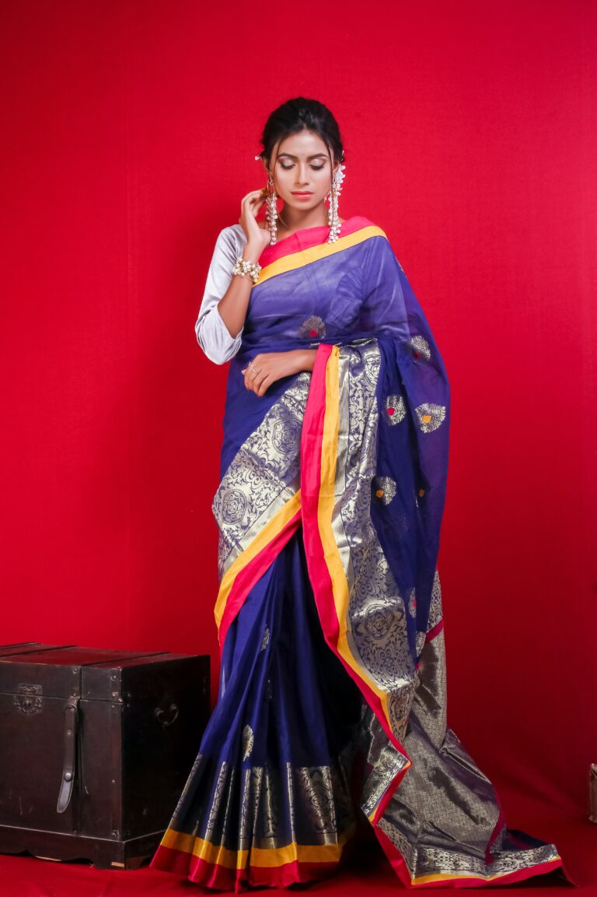
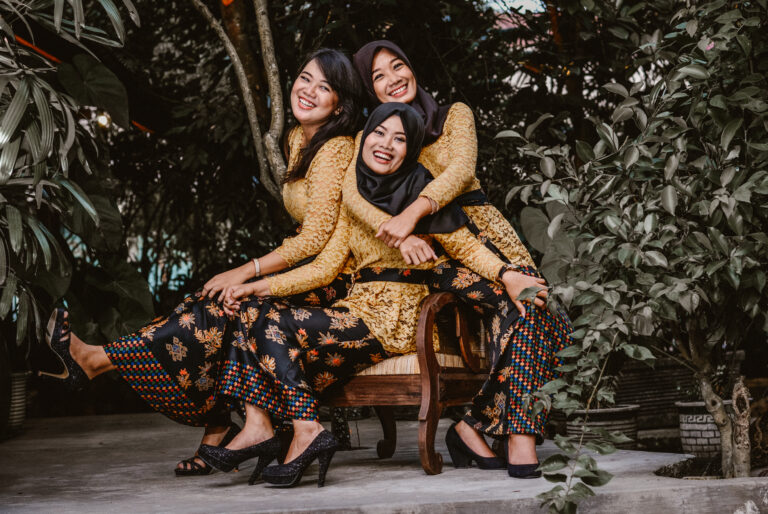
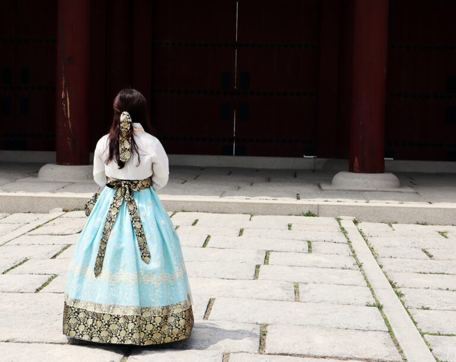
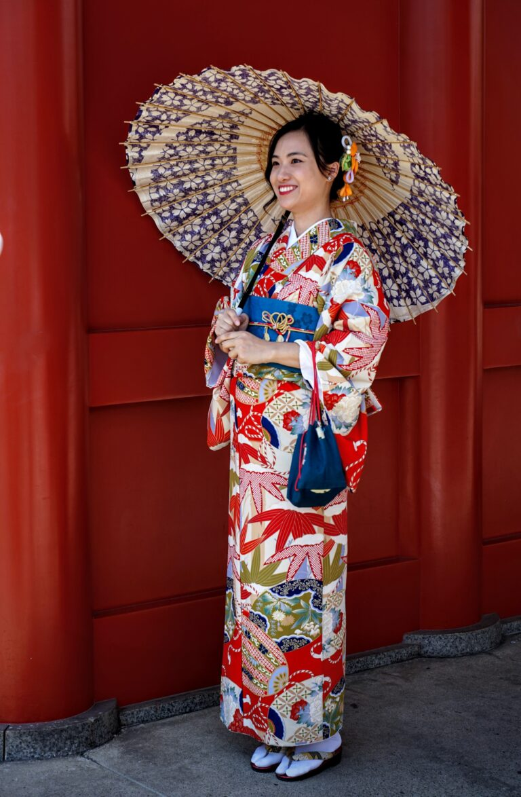

1. Saree (India)
India is a land of myriad and exquisite cultures and subcultures. One of the main traditional dresses of India is the Saree. However, you’ll find a variety of different attires per sub-culture across the country. Derived from Sanskrit for ‘strip of cloth’, it is a single-length fabric that is 5 to 9 meters and worn with a blouse. The Saree can be draped in many different ways, making it world’s most versatile garment.
Some prefer to wrap a simple cotton version due to the hot and humid climate, while others opt for glamorous pieces for festivities and occasions. The garment has evolved over time and 75% of Indian women wear it every day. Also people in parts of Bangladesh, Pakistan, Nepal, and Sri Lanka wear it.

2. Kebaya (Indonesia)
Kebaya is a traditional blouse-dress combination from Indonesia and also people in Malaysia, Singapore, Brunei, southern Thailand, Cambodia, and the southern part of the Philippines wear it. Prior to 1600, only the women of the royal family wore the Kebaya, but gradually adopted by everyone. It is usually made from cotton, velvet, silk, lace, and brocade. One interesting fact about kebaya is that even the female flight attendants of Malaysia and Singapore Airlines wear kebaya-style uniforms. The Indonesians are making efforts for Kebaya to be an Intangible Cultural Heritage to UNESCO.

3. Hanbok (South Korea)
Hanbok is the traditional Korean dress also known as the Joseon-oth in North Korea. The term means Korean clothing and they designed it to allow easy movement. The two-piece attire comprises a jeogori (blouse) and a chima (skirt), for women and jeogori (jacket) and baji (trousers) for men. People wear it during formal or semi-formal occasions such as festivities and celebrations.
Traditionally, the Koreans made it in vibrant colors that represent the five elements of the yin and yang. In 1996, the Korean government announced October 21 as “Hanbok Day”.

4. Kimono (Japan)
Kimono – which literally means a thing to wear – is a full-length robe. Both men and woman wear it in Japan and it is secured with an obi, which is a fabric sash.
Worn for festivals and occasions, it is one of the oldest national costumes still in use. The kantoi, which was the 1st prototype, traces as far back as the 3rd century. It commonly has floral patterns, cherry blossoms, and symbols such as the crane, indicating good fortune and long life.
It has different versions- the yukatais casual wear made of cotton, linen, or hemp, while the bright-colored furisode is usually a family heirloom gifted to a woman in marriage. ‘Arigato’ to Japan from the rest of the world for this lovely attire.


506 Comments